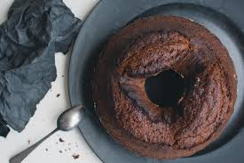

BOLO DE CHOCOLATE

BOLO CHOCOLATE
INGREDIENTES
- 3 ovos
- 1 chícara de chocolate em pó ou achocolatado
- 1 1/2 xícaras de açucar
- 1 xícara de oleo
- 2 xícaras de farinha de trigo
- 1 pitada de sal
- 1 colher de sopa de fermento em pó
- 1 chícara de água quente

MODO DE PREPARO
MASSA
1. Em um liquidificador, bata os ovos, o açúcar, o óleo, o achocolatado e a farinha de trigo.
2. Despeje a massa em uma tigela e adicione a água quente e o fermento, misturando bem.
3. Despeje a massa em uma forma untada e asse em forno médio-alto (200° C), preaquecido, por 40 minutos.
4. Com um fouet, misture até ficar homogêneo.
5. Desenforme ainda quente
6. Em uma panela, leve todos os ingredientes ao fogo até levantar fervura.
7. Despeje ainda quente em cima do bolo.